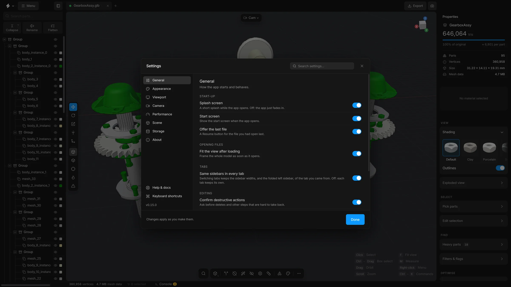
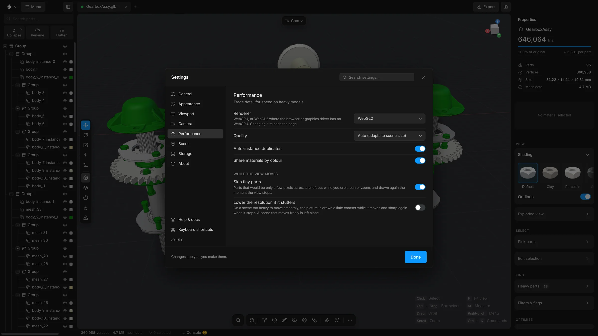

Settings
One window with its sections and a search. What each section holds, in a sentence or two, from the start-up options and the search to the look of the interface.
Open it with Ctrl, or Menu, then Settings…. Changes apply as you make them. A click anywhere on a row with a switch turns the switch. There is nothing to confirm: press Done or Esc to close the window.
The list at the left has the sections. The field at the top searches every section at once. Press CtrlF to jump to it. While a search is typed, Esc clears it first. At the bottom of the list are links to Help & docs and Keyboard shortcuts, and the version number. Inside a section the settings are in cards, one for each group; click the title of a card to fold it (it stays folded next time). A section with three or more cards has chips under its title that jump to them.


General
How the app starts and behaves.
- Splash screen
- The short splash with the version while the app opens. Off: the app just fades in.
- Start screen
- Show the start screen when the app opens.
- Offer the last file
- A Resume button on the start screen for the file you had open last.
- Fit the view after loading
- Move the camera so a newly opened model fills the view.
- Same sidebars in every tab
- Keep the sidebar widths when you switch tabs.
- Confirm destructive actions
- Ask before deletes and other steps that are hard to take back.
- Warn before closing with a model open
- Closing the tab (CtrlW) or reloading asks first while a model is open or a scene has changes that are not saved. The question is the browser’s own. On by default.
- Same height for every dock
- Materials, Library and Animate keep the height you drag one of them to when you switch between them. Off: each one keeps its own. The Console always keeps its own. On by default.
- Undo history
- How many steps CtrlZ can go back: Short (50), Normal (200) or Long (500). A longer history uses more memory. See Undo and redo.
- Delete groups when they become empty
- Remove a group automatically when an action empties it. Off by default.
- Keep a recovery copy
- While a scene has changes that are not saved, a copy of it is kept inside this browser every minute, every 2 minutes (the default) or every 5 minutes, and only when something changed. If the app crashes, it offers the scene back. Off stops it. See Get your scene back after a crash.
- New scenes: Unit and Up axis
- What a scene you start from now on shows sizes in (mm, cm, m, in, ft, or none), and which way is up (Z-up for CAD, Y-up for glTF and Unity). It applies to every new tab and every reload. The scene you have open keeps its own; change that one in the Scene card of the right sidebar.
Search
What the search (CtrlK or ShiftC) looks through, and how closely a name has to fit. The search itself is explained in Search and commands.
- Sidebar controls
- Every button, switch and field of the sidebars, besides the commands. Choosing one opens its card and takes you to it.
- Parts of the scene
- Parts by name. Enter selects and frames one. When several carry what you typed in their name, one row selects them all.
- Library parts
- Standard parts by name. Enter adds one to the scene.
- Sums and lengths
- Type
12*25.4or2 inand the answer is the first row. Enter copies it. - Settings
- The rows of this window, by name. Choosing one opens the window and takes you to its row.
- Switches in the results
- A switch that is found is drawn in its row. Press it, or Enter, to turn it on or off without leaving the search. ShiftEnter goes to it instead. Off: choosing the row goes to the switch.
- Other words for the same thing
removealso finds Delete,boltsfinds Fasteners,picturefinds Screenshot.- Forgive a slip of the finger
- One letter wrong, missing, one too many, or two the wrong way round still finds the command.
- Initials
rhfinds Remove holes,ssfinds Save scene.- Coloured icons
- Each kind of result has a colour of its own on its icon. Off: the icons are all grey.
- What you used lately comes first
- Among commands that fit about as well, the ones you ran last stand higher.
- How many results
- The most commands listed for what you typed: Few, Normal or Many.
- A mark in front narrows the search
- A reminder of the four marks:
>for commands,@for parts,+for library parts and#for settings. - Recent commands
- The commands you ran last lead the list while nothing is typed. Forget them empties that list.
Appearance
The look of the interface. It does not change the model or the 3D view. Reset at the bottom puts everything in this section back to the defaults.
- Accent
- The colour of buttons, selections and highlights. Choose one of nine colours, or the last swatch to pick any colour. That swatch opens the app’s own colour picker. While you drag in it, the Settings window steps aside so you see the colour on the real interface, and Esc goes back to the accent you had. The picker can be moved wherever it is opened: drag the strip along its top, or the hint along its bottom. Right-click the colour field or a swatch under it for Copy colour, Paste colour, Copy as and Show numbers as: the colour can be written as HEX, RGB, HSV or HSL.
- Surfaces
- The greys the interface is built from: Graphite, Midnight, Warm or Black.
- Font
- The typeface of the interface: Default (Inter), Geist, Space Grotesk, System, Mono or Serif.
- Text size
- Everything written in the interface, from Small to Larger. Buttons and fields grow with it.
- Corners
- How round the corners of buttons and cards are: Sharp or Default.
- Density
- The height of buttons, fields and dropdowns: Compact, Default or Roomy.
- Colour the hierarchy icons
- Groups amber, parts green, copies that share geometry purple and cloners blue in the parts tree. Off: all grey, and only the selection is coloured. On by default.
- Interface animations
- Fades, slides and the movement of the splash screen. Off: everything just appears.
Viewport
What the 3D view draws around the model.
- Highlight small parts
- Tints the parts that are under the size threshold of Delete small parts.
- Arrow to a selection out of view
- A faint arrow at the edge of the view points to the selection when none of it is on screen. Click the arrow to frame the selection. On by default.
- CAD view look
- The look the CAD view (key 6) shades with: Ceramic, Light or Mono. The same choice is in the Shading card on the right.
- Ground grid
- The floor grid. G switches it too.
- Sun direction gizmo
- A handle in the viewport for turning the light.
- FPS counter and Renderer stats
- Small read-outs of how fast the view is drawing.
- Show origin points
- Shows a dot at the origin of each group in the viewport. Off by default.
- Fog
- Fades the grid and distant parts into the background, with start, end and intensity.
- Link the list and the view on hover
- Point at a part in the tree and it lights up in the view. On by default.
- Glow on the selection
- A soft light on the surface of the selected parts, brightest at their edges, so they stand out in a busy model. Off: the thin outline alone. On by default.
- Wireframe: Lines
- Quads draws the polygons you edit: two flat triangles that make a four-sided cell show as one cell. Triangles draws every edge of the mesh. It changes what is drawn, not the mesh.
- Wireframe: Flat within
- Strict, Normal or Loose: for parts that have polygons of their own, how far neighbouring triangles may turn away from each other and still count as one polygon.
Camera
Projection, focal length, clip planes, and how the view moves. A right-click on the camera pill, top left of the view, opens the lens and navigation settings beside it.
- Projection
- Perspective, as a camera sees, or Orthographic, with no perspective.
- Focal length
- The lens in millimetres, 10 to 200, in perspective: a bigger number zooms in.
- Clip planes
- How near and how far the camera sees. Auto fits the scene. Tight is for tiny parts, Wide for large assemblies and Huge for the size of a factory.
- Orbit around
- What the view turns around when you drag. Selection: the selected parts, or the centre of the view when nothing is selected. Scene: always the centre of the view. Cursor: the point under the pointer when the drag starts. That is the surface the pointer is over, or, over empty space, a point at the depth the view was turning around.
- Zoom toward the cursor
- The wheel zooms toward the pointer instead of the centre of the view.
- Orbit speed, Pan speed and Zoom speed
- How far the view turns for a drag, slides for a pan drag (middle or right button) and moves for the wheel. Pan and zoom are Slow, Normal or Fast. Orbit has two more steps, Very slow and Very fast.
- Invert orbit direction
- The view turns the other way for a drag: drag right and the model turns left.
- Stop at the horizon
- The camera cannot go below the grid, so you cannot end up looking at a model from underneath by accident. Off: it turns freely all the way round.
The mouse moves are explained in Move the view.
Performance


- Renderer
- WebGPU, or WebGL2 where the browser or the graphics driver has no WebGPU. Changing it reloads the page.
- Quality
- Auto adapts to the size of the scene. High always draws at full sharpness. Low draws coarser, for scenes with millions of triangles.
- Auto-instance duplicates
- Draw repeated shapes as one mesh with many positions. It applies the next time a model is loaded.
- Share materials by colour
- Let parts of the same colour share one material. It applies the next time a model is loaded.
- Skip tiny parts
- While the view moves, leave out parts that would be only a few pixels across.
- Lower the resolution if it stutters
- While a heavy scene moves, draw it a little coarser, and sharp again when it stops.
- Graphics
- Says whether the browser draws with the graphics card or in software, and what to do if it is software.
- Memory
- What the page holds, the geometry of everything open and the undo history, read when the section opens. Refresh reads them again.
Claude
The connection that lets Claude work with the open scene: the switch, what it may do, whether it asks first, and what it has asked for. It is explained in Work with Claude. It is not in the online version.
Updates
Look for a newer version, choose how the app tells you, and go back to the one before. It is explained in Stop, restart and update. It is not in the online version.
Scene
Not a section of this window: these belong to the open scene, are saved with it, and are in the Scene card at the bottom of the right sidebar. Ctrl; opens that card, and so does Scene settings… in the search.
- Display units
- The unit used for sizes and distances on screen: millimetres, centimetres, metres, inches, feet, or none.
- Up axis
- Which direction is up: Z, as CAD programs have it, or Y, as glTF and some 3D programs have it. It changes how the scene is shown. The exported file follows the choice in the Export window.
- Scene scale (×)
- A multiplier for the whole scene on screen. 0.001 turns millimetres into metres.
- Grid cell size
- The size of a grid cell. Auto fits the model.
- Snap gizmo to grid
- The move tool jumps from one grid cell to the next.
- Shadows
- The sun casts shadows of the parts on each other.
- Background
- Dark, Studio gradient, Neutral grey, White, or HDRI environment. An HDRI is a picture of surroundings that lights the model. Nine come with the app, shown as small pictures (Studio, Soft, Loft, Daylight, Outdoor, Sunset, Venice, Overcast and Grey sky), or load your own
.hdror.exrfile with Load HDRI…. With Show as background off, the HDRI still lights the model and shows in its reflections, but the background is the plain colour.
The light has no settings here. The sun is turned with the Sun direction gizmo in the viewport.
Storage
What the app remembers on this computer, each with a button to clear it:
- Recent files
- The list on the start screen.
- File access
- Permissions that let the app reopen a recent file without asking where it is.
- Import options
- Shows the options window again for the formats where you ticked “Don’t ask again”.
- Panel sizes
- The widths of the sidebars and the heights of the drawers.
- Recovery copies
- The copies kept of scenes with changes that are not saved. Delete them and a crash can no longer be recovered from until the next change.
- All settings
- Puts every preference back to its default, the look of the interface included.
About
The version, where to find help, and what to send when something goes wrong.
- Details
- The version of the app, the renderer, how many parts and triangles the scene has, the size of your screen and your browser.
- Help & docs, Keyboard shortcuts
- Open the help window and the list of shortcuts. See The help window.
- Copy details
- Copies the details above, with your graphics card and the look you chose, as text. Paste it into a new issue on GitHub so the problem is easier to find.
- Report a problem
- Opens the report page in your browser, with your version and system already filled in.
- Website, Source code
- The downloads and docs, and the code on GitHub. The app is free and open source, under the MIT licence.